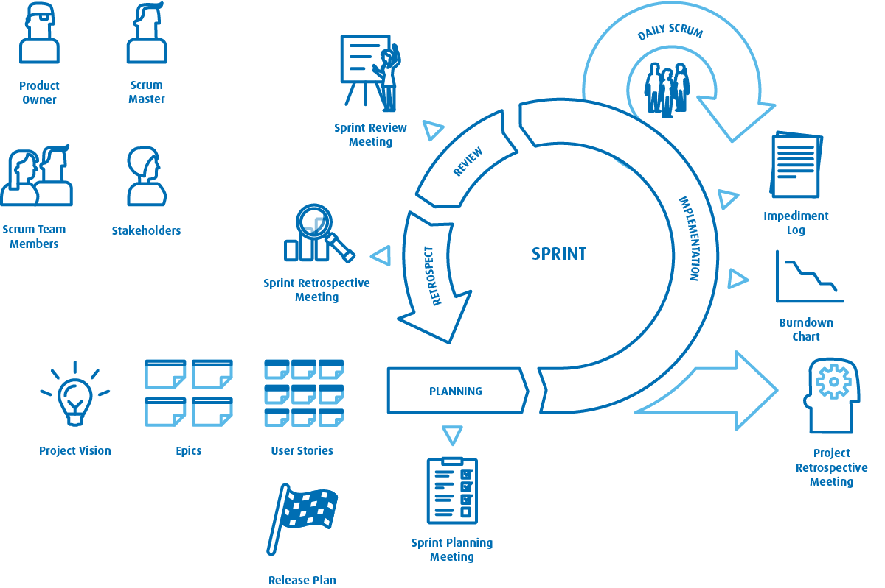

Etapowością, wymaga dokumentacji i monitorowania postępów oraz stosowania odpowiednich technik w zakresie zarządzania ryzykiem czy budżetem. Przykładami podejść klasycznych w zarządzaniu projektami są PRINCE2 czy PMBOK.
Zwinne podejście było obecne w codziennym życiu od bardzo dawna, przykładowo wykorzystywano je w masowej produkcji samochodów na początku XX wieku czy w obszarze zapewniania jakości. Dopiero na początku XXI wieku zostało oficjalnie opisane przez Jeffa Sutherlanda i Kena Schwabera w dokumencie pod nazwą „Scrum Guide”. Metodyki zwinne skupiają się na elastycznym podejściu i iteracyjnej realizacji projektu, zakładając, że nie wszystko można przewidzieć i zaplanować, a ważniejsze jest reagowanie na zmiany niż trzymanie się z góry ustalonego planu.
Według ostatniego badania „State of Agile 2020” Scrum i jego warianty są najchętniej wykorzystywaną metodyką zwinną w organizacjach (według 58% respondentów). Czym więc jest Scrum?
SCRUM
Nazwa pochodzi z gry w rugby, oznacza formację zawodników, tzw. młyn.
Proste, krótkie projekty, jeden lub kilka produktów, mała liczba osób (kilkanaście, kilkadziesiąt osób), brak lub mała liczba zależności pomiędzy zespołami.
SAFe
Angielska nazwa: Scaled Agile Framework, czyli skalowany Scrum.
Złożone projekty lub programy przeznaczone do realizacji na wiele lat, rozbudowany produkt, bardzo duża liczba osób (kilkaset lub nawet ponad tysiąc osób), liczne powiązania pomiędzy zespołami (techniczne i merytoryczne aspekty).
LeSS
Angielska nazwa: Large Scale Scrum, czyli skalowany Scrum w dużej skali.
Projekty, w których można zastosować jeden Backlog Produktu dla wszystkich zespołów, małe zespoły, jeden Product Owner dedykowany dla wszystkich zespołów. Główny cel to uproszczenie procesów, ról i wydarzeń.
Scrum to m.in.:
Elastyczne i proaktywne podejście do zarządzania projektami,
podział projektu na samoorganizujące się niezależne zespoły,
podejście, w którym zespoły posiadają wszystkie kompetencje do ukończenia zadań,
iteracyjny sposób pracy oparty na 3 filarach, jakimi są inspekcja, adaptacja i przejrzystość.

Dokument opublikowany na stronie agilemanifesto.org pozostaje w niezmienionej formie do dzisiaj. I chociaż można podejrzewać, że opinie autorów na temat tworzenia oprogramowania odrobinę się zmieniły, to jednak idea pozostanie wiecznie słuszna.
Trudno się temu dziwić, bowiem sam “manifest” jest bardzo ogólny. Jego główna część w tłumaczeniu na język polski wygląda następująco:
Odkrywamy nowe metody programowania dzięki praktyce w programowaniu i wspieraniu w nim innych.
W wyniku naszej pracy, zaczęliśmy bardziej cenić:
Ludzi i interakcje od procesów i narzędzi
Działające oprogramowanie od szczegółowej dokumentacji
Współpracę z klientem od negocjacji umów
Reagowanie na zmiany od realizacji założonego planu.
Oznacza to, że elementy wypisane po prawej są wartościowe, ale większą wartość mają dla nas te, które wypisano po lewej.
To jednak nie koniec. Autorzy stworzyli także listę 12 Zasad Zwinnego Tworzenia Oprogramowania, które dotyczą tworzenia oprogramowania tylko z nazwy.
Bo przecież nietrudno jest wykreślić słowo “deweloperskiego” z zasady mówiącej, że “Najbardziej efektywnym i wydajnym sposobem przekazywania informacji zespołowi deweloperskiemu i wewnątrz niego jest rozmowa twarzą w twarz.”